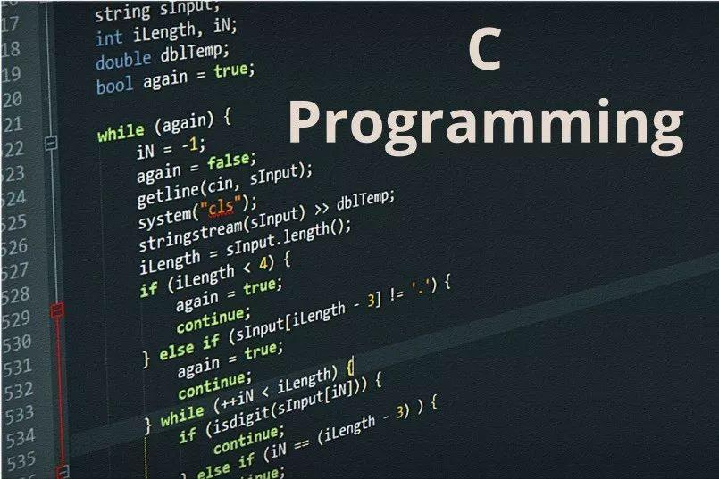
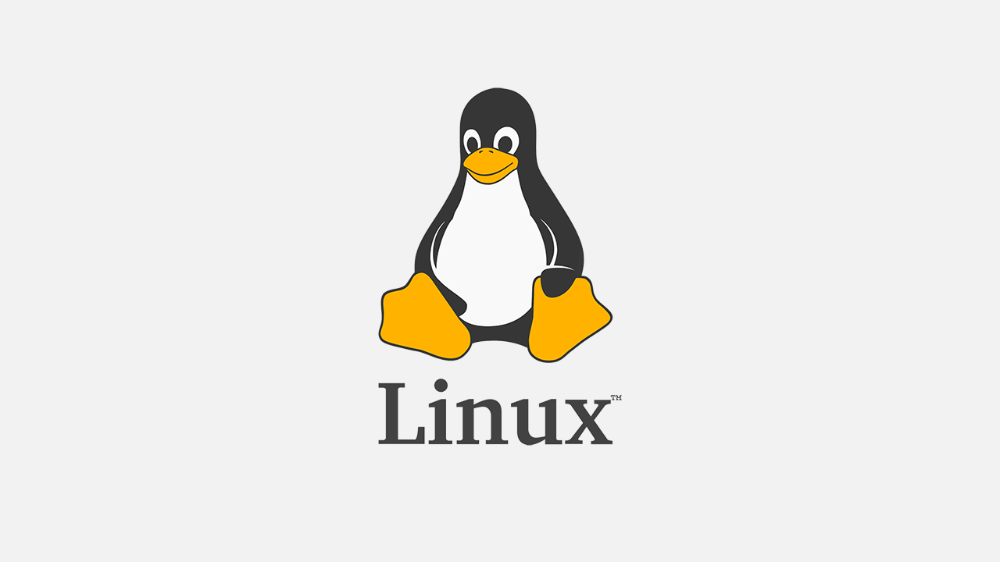

日晚，于定新规，言程序员端，荐于版本控制 git 。昨夜，再聊，小子不忘一干二净，遂教小子手把手 git 具，意在尊工作效率，并进，俱长，广话题

Unix诞生
1960年，美国AT&T公司贝尔实验室（AT&T Bell Laboratory）研究员Ken Thompson（肯·汤普森）想玩自己曾经编写的Space Travel（星际航行），但是只找到了一台没有操作系统的PDP-7电脑。为了玩游戏，Ken Thompson开始为PDP-7编写操作系统。
1970年，为了更快玩上游戏，Ken Thompson在BCPL语言基础上设计了B语言，并用它设计了一个操作系统。
由于这个系统是由Multics简化而来，同事们就戏称这个系统为"UNiplexed Information and Computing Service”，即没路信息计算系统，缩写为Unics，取其谐音Unix。

这时已经是1970年了，于是就将1970年定为Unix元年，现代计算机的计时也就是这个时候开始的
但是遗憾的是游戏依然还没有玩起来。因为B语言固有的特性还无法撑起UNIX这么伟大的梦想。
C语言诞生
1971年，同样酷爱Space Travel游戏的Ken Thompson的同事----Dennis M.Ritchie（丹尼斯·里奇）,也加入了Ken Thompson的玩游戏伟大事业中来。

Dennis M.Ritchie主要负责改进B语言。
1972年，在B语言基础上设计的C语言正式诞生----上帝的编程语言。

Dennis M.Ritchie和Ken Thompson迫不及待地用C完全重写了UNIX。
所以不要再批评哪些玩游戏的男同胞了，他们可能将是下一个历史的开创者哦哦～～
Linux诞生
Unix实在太好用了，这套系统在Bell实验室广为流传。1974年7月，Bell实验室公开了Unix，引起了学术界的广泛讨论，并大量应用于教育目的。1978年学术界老大伯克利大学，推出了以Unix第六版为基础并加入改进的新Unix，并命名为BSD（Berkeley Software Distribution伯克利分发版），于是Unix的分支BSD系列就诞生了。由于Unix的高度可移植性与强大的性能，加上当时并没有版权的纠纷，所以让很多商业公司开始了Unix操作系统的开发。然而当时Bell属于AT&T，AT&T被《谢尔曼反托拉斯法》规定了不能销售除了电话机电报机等之外的商品，后来随着AT&T的分解，Bell可以卖出Unix了，第七版Unix明确提出“不可对学生提供源码”，Unix走向了商业化。高昂的授权费导致很多大学停止了对Unix的研究。
此时，IBM公司开发的MS-DOS操作系统、Apple公司开发的Mac操作系统，Unix操作系统，Minix操作系统全都要收费。
芬兰大学生Linus（李纳斯）利用圣诞的压岁钱和贷款购买了一台386兼容电脑，并从美国邮购了一套Minix系统软件，在等待邮寄到达的期间，Linus认真学习了有关Intel 80386的硬件知识。Linus向Unix开发者提供了许多建议，但Unix开发者看不起这些民间人物，并没有采纳Linus的意见。
1991年，Linus萌生了开发一个自由的UNIX操作系统的想法,这个操作系统问世以后，Linus将其取名为Linus的Unix，为了不让这个羽毛未丰的操作系统矢折，Linus将自已的作品通过Internet发布。从此一大批知名的、不知名的电脑黑客、编程人员加入到开发过程中来，为了方便，将Linus的Unix简称为Linux。

Git诞生
Linux的壮大是靠全世界热心的志愿者参与的，这么多人在世界各地为Linux编写代码，世界各地的志愿者把源代码文件通过diff的方式发给Linus，然后由Linus本人通过手工方式合并代码.
不过，到了2002年，Linux系统已经发展了十年了，代码库之大让Linus很难继续通过手工方式管理了，社区的弟兄们也对这种方式表达了强烈不满，于是Linus选择了一个商业的版本控制系统BitKeeper，BitKeeper的东家BitMover公司出于人道主义精神，授权Linux社区免费使用这个版本控制系统。
2005年,Linux社区牛人聚集，开发Samba的Andrew试图破解BitKeeper的协议（这么干的其实也不只他一个），被BitMover公司发现了，于是BitMover公司怒了，要收回Linux社区的免费使用权。
Linus可以向BitMover公司道个歉，保证以后严格管教弟兄们，但他并没有，Linus花了两周时间自己用C写了一个分布式版本控制系统，这就是Git！一个月之内，Linux系统的源码已经由Git管理了！
参考资料
[1] 编程C语言是怎么诞生的,知乎
[2] Linux诞生故事以及不同版本的区别,知乎
[3] Git的诞生,廖雪峰博客